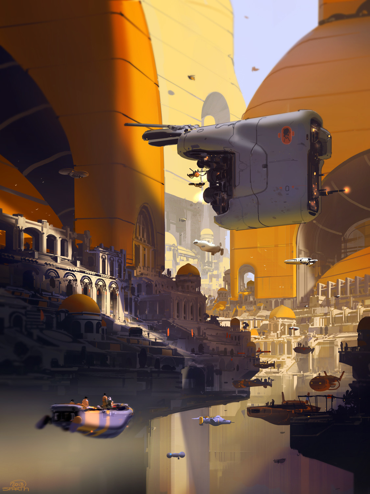

SPARTH.
BIO: Sparth (nicolas bouvier) has been an active artistic director and concept designer in the gaming industry since 1996. Born in France, he now lives in Seattle, Washington, working for Microsoft.Having had the privilege of travelling extensively at an early age to such places as far afield as the USA, Singapore, China, France and Europe, he was influenced greatly by the various cultures, and he enjoyed observing people and making notes of all these tiny details of life that he was witnessing. The varied influences are largely responsible for his multiple creative passions, which range from space, to buildings , to robotics and beyond.
There are no limits to his creativity when it comes to translating forms and concepts. One of his greatest passion remains contemporary architecture , of which he applies principles in his own art, with an experimental and original approach. He also harbours a fascination for modern skyscrapers, although he admits that he wouldn't be able to live too high above the ground himself.
PORTFOLIO
 |
|||
|  |